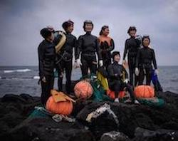

My name is Margarita. I'm a web developer with a market research background.
In other words, I've been working as a market researcher (basically online surveys, qualitative and quantitative research and data collection) and returned a programmer.
Originally from the lovely and peaceful Mallorca Island and currenty living in Barcelona!
My projects
Atipica Joiesis a retail business establishment, that specializes in selling (and also buying) jewellery and watches. Jewellery stores provide many services such as repairs, remodeling, restoring, designing and manufacturing pieces. Visit the website.

Tribuye page Haenyeo (also spelled haenyo) (Hangul: 해녀; lit. "sea women") are female divers in the Korean province of Jeju. whose livelihood consists of harvesting a variety of mollusks, seaweed, and other sea life from the ocean. Known for their independent spirit, iron will and determination, haenyeo are representative of the semi-matriarchal family structure of Jeju. Continue reading...
Contact
You can contact me by clicking HERE and filling the contact form.